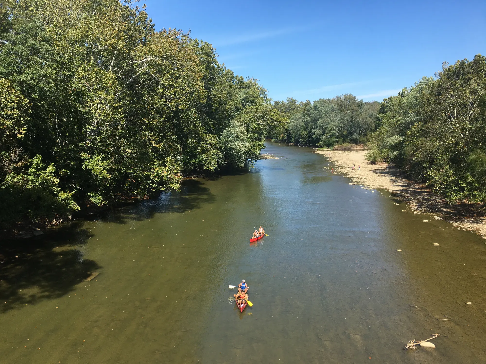
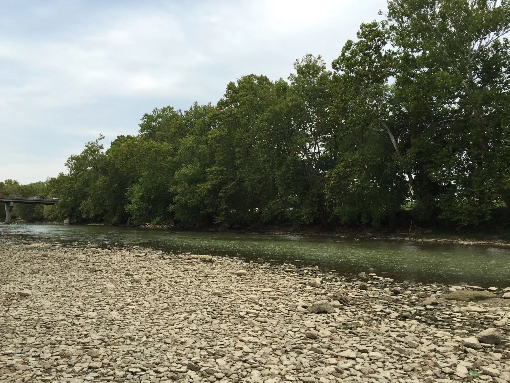
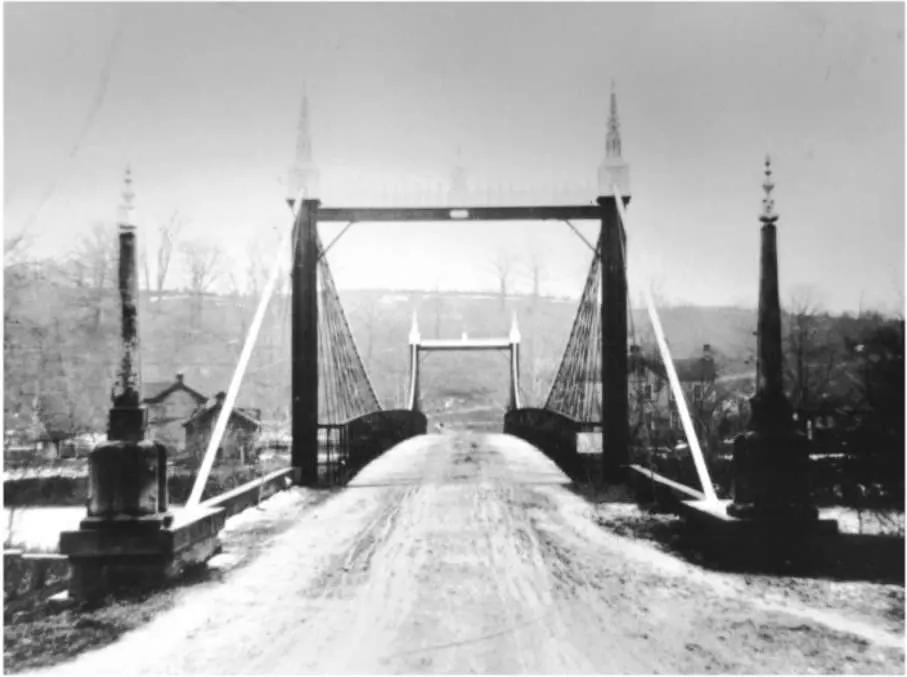
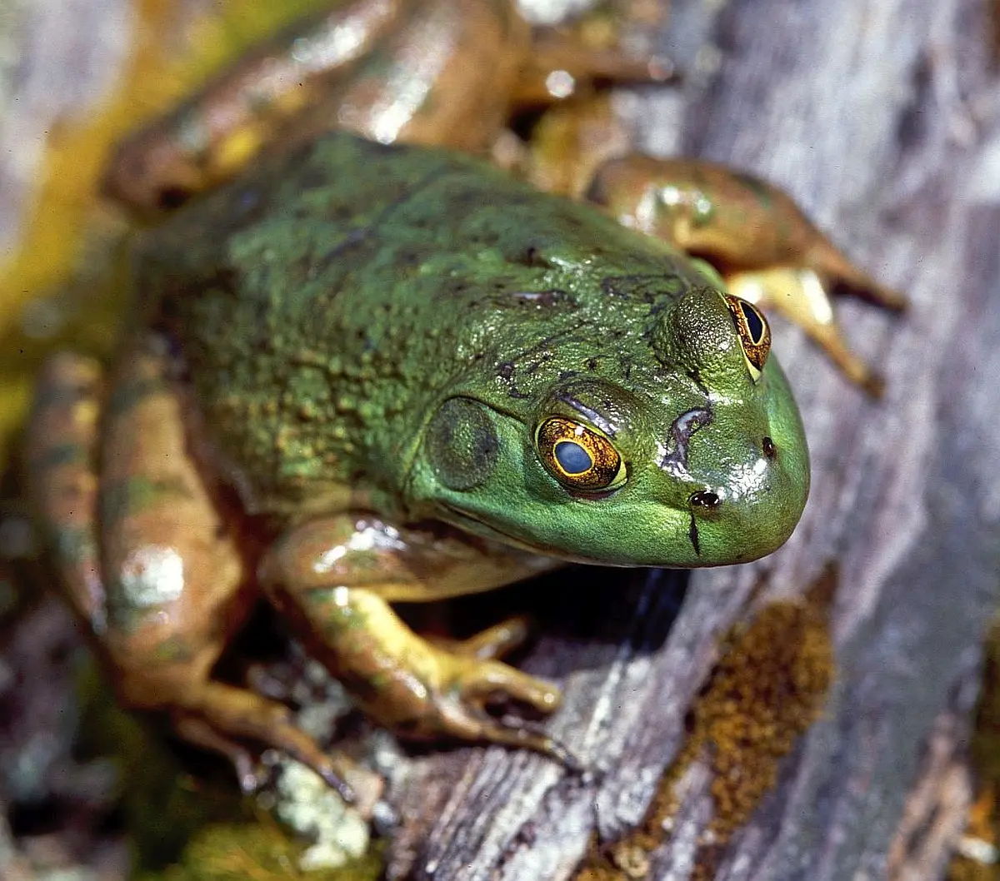
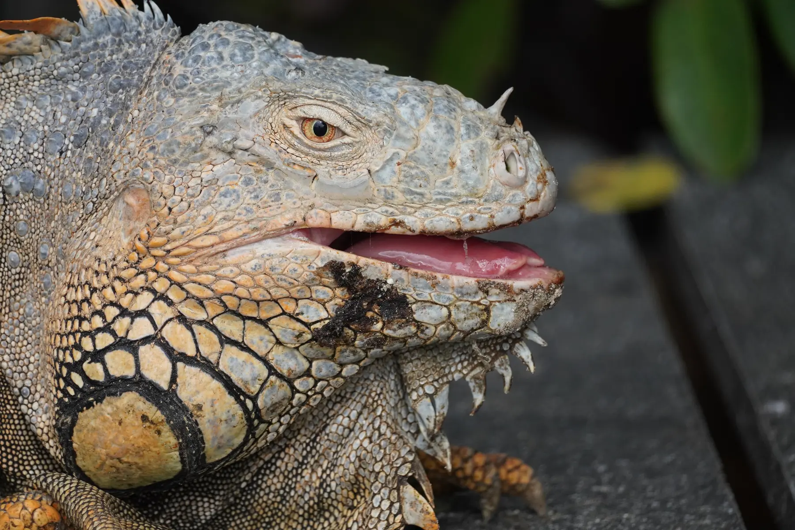

The Loveland Frog.
Three grey figures. Four little men. One tailless iguana. A legend built from reports that never completely agree.

The familiar legend merges at least two reports from 1955: Robert Hunnicutt's roadside encounter with three grey figures and a second witness's brief sighting of four little men beneath a bridge.
Later retellings supplied the unified creature design: green skin, frog anatomy, webbing and a magical-looking wand. Keeping the reports separate makes the case stranger, less cinematic—and more accurate.
Archive rule: record the early testimony first. Label later additions as folklore.
Two reports beneath the legend.
The similarities are small stature and an unusual odor. The witnesses, locations, figure counts and descriptive detail are different.[01]
Robert Hunnicutt
Three grey figuresAbout 3½ feet tall, broad straight mouths, bald ridged heads and asymmetrical bodies. One held a rod or chain associated with blue-white sparks.
- Known witness
- Longer observation
- Frog resemblance limited to the mouth
- No webbed feet established
Witness “C.F.”
Four little menA 19-year-old Civil Defense auxiliary reported roughly three-foot human-looking figures moving oddly below a bridge. The observation lasted about ten seconds.
- Name withheld in the source
- Very brief observation
- No frog anatomy recorded
- No rod, sparks or wand
May 25, 1955. Branch Hill.
The most detailed reconstruction comes from a 1956 interview published by Isabel Davis and Ted Bloecher in 1978. It remains testimony, not physical evidence.[01]
Headlights found three shapes.
Driving north on Madeira-Loveland Pike near Hopewell Road after work, Hunnicutt first thought he saw men kneeling in the grass. He stopped roughly ten feet away. The figures were grey—not green—and stood in a rough triangle.
The forward figure raised its arms around what looked like a rod or chain while two or three blue-white sparks moved around it. When Hunnicutt stepped toward the front of his car, the figures shifted toward him. He left and reported an intense odor resembling cut alfalfa with almonds.
Police Chief John K. Fritz found Hunnicutt frightened and apparently sober, then searched the area without finding anything unusual. A separate newspaper item helped Bloecher date the event; it did not independently corroborate the figures.
Read the Loveland excerptA ten-second sighting with fewer details.
The separate C.F. report is often transformed into the famous traveling-salesman story. The early investigation instead describes a young Civil Defense auxiliary.[01]

Four little men. No frogmen.
C.F. reported four roughly three-foot, human-looking figures moving oddly on the riverbank below a bridge and a terrible smell. He later declined to elaborate.
- No green skin in the early account
- No frog face, hands or feet
- No sparks, rod or wand
- No verified FBI investigation
Three or four, depending on the newspaper.
He shot the animal.
Toward or into the river.
Crawled beneath the guardrail.
Escaped or washed away.
Recovered and placed in his trunk.
Mathews already suspected a large tailless iguana.
Definitively a 3–3½-foot tailless iguana.
Not established in accessible contemporary excerpts.
Mathews said Shockey agreed it was the same animal.
Best reading: a large lizard was probably involved. The recovered-body claim is later, conflicts with contemporary coverage and cannot be treated as independently verified. Contemporary sources spell the officer's name “Matthews”; WCPO's direct 2016 interview uses “Mathews.”
A frog cannot fit the scale. A lizard can fit the silhouette.
Representative animals clarify plausibility; neither image depicts an animal from the case.

Inches—not feet.
The region's largest familiar frog cannot approach a three- or four-foot upright humanoid. Its broad mouth helps explain a visual comparison, not a giant biped.[07]

Several feet long.
A tailless pet iguana seen briefly in headlights could present a compact, unfamiliar silhouette. Scaly skin and a forked tongue favor a lizard. Cold Ohio weather makes activity less expected, but not impossible for an escaped animal near a heat source.[08] [09]
Unverified. Indeterminate.
Bright points and a vague upright silhouette are visible in the broadcaster-hosted media. That makes the recording an artifact of the report, not proof of the creature.
No reliable confession or definitive reconstruction was located. Calling the episode a confirmed hoax would outrun the evidence just as surely as calling it a photograph of the Frogman.
View official WCPO coverageArchive label: unverified / indeterminate.
What the record can—and cannot—carry.
Documented reports establish that people told these stories. They do not establish an unknown animal.
How the creature acquired its anatomy.
The retelling becomes cleaner as the source record becomes less precise.
Grey figures
Broad mouths reminded Hunnicutt of frogs. Lower bodies were partly hidden.
Figures under a bridge
Hunnicutt's three and C.F.'s bridge location begin sharing one scene.
Green frogmen
Full frog heads, webbed extremities and leathery green skin become standard.
A magic wand
An uncertain rod or chain associated with sparks becomes a defining prop.
The city claimed its monster.
The biological case remains empty. The cultural record keeps growing.
A civic mascot debuts
Loveland's City Manager report records the Frog Prince mascot's debut during Hearts Afire Weekend.[10]
Return of the Frogman
The city launches a leap-year event with games, comedy and children's programming. The official page lists the next return for 2028.[11]
Frogman Festival IV
The independent annual festival gathers cryptid art, speakers, vendors and film programming.[12]
The reports survive. The animal does not.
The sightings are part of the historical record. The Frogman is not part of the zoological record. What survives is a regional legend assembled from human testimony, a likely escaped lizard and more than seventy years of retelling.
Folklore active. Physical evidence absent. The 1972 incident was probably explained.
Primary records and careful reconstructions.
The case distinguishes contemporary reporting, later recollection, official civic records and biological comparison.
- 01Davis & Bloecher · Close Encounter at Kelly and Others of 19551978 investigation based on 1956 interviews with Hunnicutt and Chief Fritz, plus local newspaper research.Open ↗
- 02Ohio Magazine · Field Guide to Ohio CryptidsRegional folklore overview useful for comparing the standard modern version.Open ↗
- 03Strange Animals Podcast · Loveland Frog source reviewTranscribed excerpts from the March 1972 Cincinnati Post and April 1972 Journal Herald coverage.Open ↗
- 04WCPO · Mark Mathews interviewDirect 2016 interview identifying the 1972 animal as a recovered tailless iguana; materially conflicts with contemporary coverage.Open ↗
- 05WCPO · Lake Isabella reportSam Jacobs's account and broadcaster-hosted night imagery from August 2016.Open ↗
- 06FOX19 · Legend of Loveland Frogman lives onIndependent local coverage of Jacobs's report and supplied media.Open ↗
- 07Washington Department of Fish and Wildlife · American bullfrogOfficial species profile and adult size context.Open ↗
- 08U.S. Fish and Wildlife Service · Green iguana profileRepresentative anatomy and public-domain image record.Open ↗
- 09Florida Fish and Wildlife · Green iguana cold-stunningOfficial context on low-temperature immobility in this tropical ectotherm.Open ↗
- 10City of Loveland · City Manager reportOfficial February 2023 record of the new Frog Prince mascot's debut.Open ↗
- 11City of Loveland · Return of the FrogmanOfficial event history: debuted in 2024, returns in leap years, next planned for 2028.Open ↗
- 12Frogman Festival · Official siteIndependent annual folklore, art and cryptid gathering; separate from the city event.Open ↗
- 13Ohio Legislature · H.B. 821 statusOfficial bill record. “As Introduced” at the August 22, 2026 research cutoff; not enacted.Open ↗
- 14Ohio House · H.B. 821 announcementOfficial sponsor announcement proposing the Loveland Frog as Ohio's state cryptid.Open ↗
Little Miami River hero
AndyHemmerCincinnati, 2019. CC BY-SA 4.0, via Wikimedia Commons. Cropped, resized and toned; adaptation shared under CC BY-SA 4.0.
Little Miami River at Nisbet Park
Minh Nguyen, 2015. CC BY-SA 4.0, via Wikimedia Commons. Cropped, resized and toned; adaptation shared under CC BY-SA 4.0.
Historic Branch Hill bridge
Hamilton County Engineer's Office, before 1922. Public domain. Historical geography only—not the exact 1955 encounter bridge. Source record.
Representative green iguana
Lydia Hansen / U.S. Fish and Wildlife Service, 2026. Public domain. This is not the 1972 animal. Source record.
Representative American bullfrog
U.S. Fish and Wildlife Service, 2004. Public domain. Source record.
Research cutoff · 22 Aug 2026No AI imagery · 2016 media linked, not republished